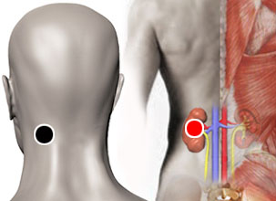

Focos de Hamer
Par
mastoides - riñón

Generalidades:
Los focos de Hamer es un descubrimiento hecho por el Dr. Ryke Greed Hamer que consisten en anomalías en el tejido del encéfalo.
El Dr. Hamer desarrolló cáncer de testículo después de la muerte de su hijo Dirk Hamer; le llamó la atención que la enfermedad surgiera poco después del choque emocional. Esto lo llevó a investigar en más de 31,000 casos descubriendo una relación entre los traumas emocionales y el desarrollo de enfermedades, particularmente del cáncer.
Los focos de Hamer, llamados así en honor a su hijo Dirk, son alteraciones en el tejido del cerebro que se pueden observar en imágenes de tomografía computarizada. En un principio se pensó que pudiera tratarse de alguna falla en los equipos. Siemens, el fabricante alemán, hizo varias pruebas desde distintos ángulos demostrando que en realidad los anillos concéntricos se encontraban en los pacientes. El Dr. Hamer descubrió que estos anillos forman parte de un proceso que denominó shock conflictivo biológico y a su vez guardan una relación directa con diversos trastornos que puedan presentarse en el cuerpo del paciente como necrosis o neoplasia. La medicina desarrollada por el Dr. alemán se conoce como La Nueva Medicina Germánica.
Focos de Hamer y fenómeno tumoral:
Como ya quedó establecido, según el Dr. Hamer toda enfermedad es producto de un choque emocional, en el caso del cáncer el fenómeno ha de tener ciertas características como ser hperagudo, dramático y aislante (es decir que el individuo se siente indefenso y solo). Al acudir el paciente al consultorio y recibir el diagnóstico de cáncer, esto a su vez es un choque emocional que ocasiona otro foco de Hamer y detona un nuevo evento canceroso, muchas veces manifestándose como cáncer de pulmón o metástasis en algún otro órgano.